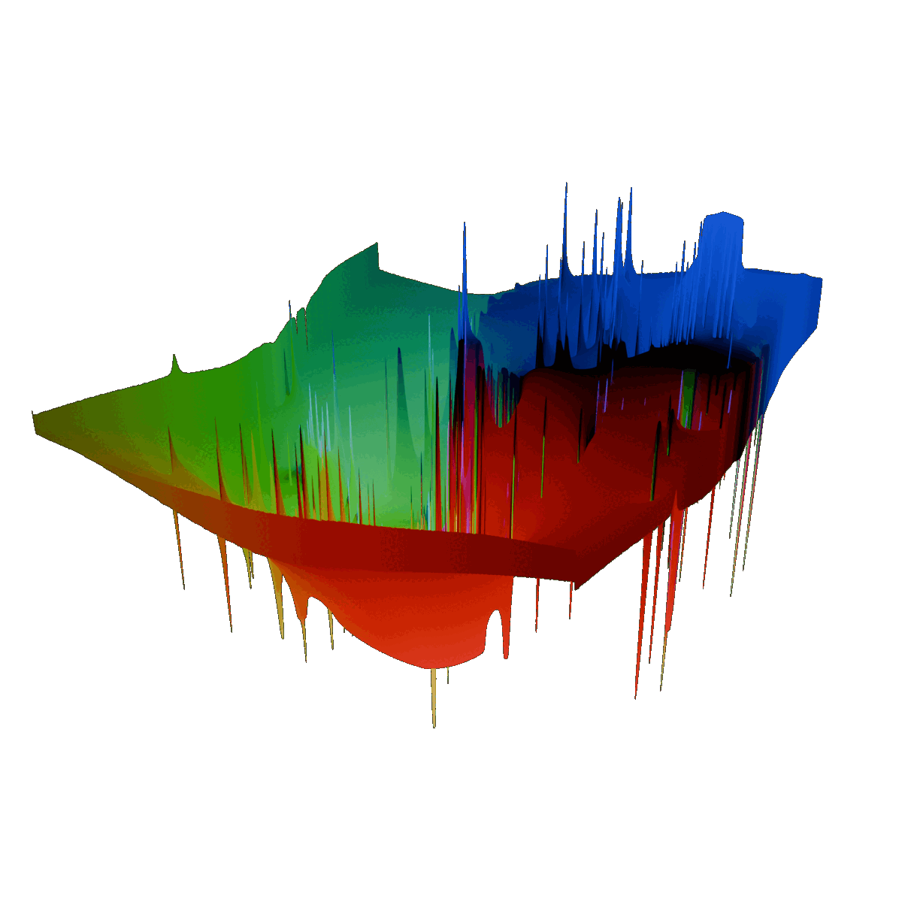

<!DOCTYPE html>
<html>
<head>
  <meta charset="utf-8">
  <meta name="viewport" content="width=device-width, initial-scale=1.0">

  <!-- OK, YOU CAN MAKE CHANGES BELOW THIS LINE AGAIN -->

  <style>
    html{
      height:100%;
      /* overflow:hidden; */
    }
    body {
      height:100%;
      padding: 0;
      /* margin: 0; */
      /* display:flex; */
      /* justify-content: center; */
      /* align-items: center; */
    }
    #gui{
      /* width:fit-content; */
      height:fit-content;
      display:flex;
      flex-direction:column;
      position:relative;
      background-color: white;
      padding:20px;
      transition:0.5s;
      font-family:'Times New Roman', Times, serif;
      color:rgb(60,60,60);
      justify-items: right;
    }
    canvas{
      margin:auto;
      display:block;
      width:auto;
    }
    .chart_title{
      font-family: Arial, Helvetica, sans-serif;
      font-size:24px;
      font-weight:bolder;
    }
    .chart_attractor_equation{
      font-family:'Times New Roman', Times, serif;
      font-style:italic;
      font-size:16px;
      color:black;
    }
    .gui_button{
      width:fit-content;
    }
    .gui_select{
      width:fit-content;
    }
    .title{
      font-family: Arial, Helvetica, sans-serif;
      font-size:34px;
      font-weight:bolder;
      color:rgb(50,50,50);
    }
  </style>
</head>

<body>
  <div style = "width:80%; max-width:1000px;margin:auto">
    <!-- <div class = "title">
      Visualizing Gentrification with Flow Fields
    </div>
    <div class = "body_text">
      <p>This project started </p>
    </div> -->
    <div id = "app" style = "display:flex;">
      <main></main>
      <div id = "gui">
        <!--  -->
      </div>
    </div>
  </div>

</body>
  <!-- PLEASE NO CHANGES BELOW THIS LINE (UNTIL I SAY SO) -->
  <script language="javascript" type="text/javascript" src="libraries/p5.min.js"></script>
  <script language="javascript" type="text/javascript" src="libraries/webgl-utils.js"></script>
  <script language="javascript" type="text/javascript" src="presetData.js"></script>
  <script language="javascript" type="text/javascript" src="stats.js"></script>
  <script language="javascript" type="text/javascript" src="gui.js"></script>
  <script language="javascript" type="text/javascript" src="censusTractConversion.js"></script>
  <script language="javascript" type="text/javascript" src="mapping.js"></script>
  <script language="javascript" type="text/javascript" src="flowField.js"></script>
  <script language="javascript" type="text/javascript" src="main.js"></script>
  <script language="javascript" type="text/javascript" src="shaders.js"></script>
</html>
